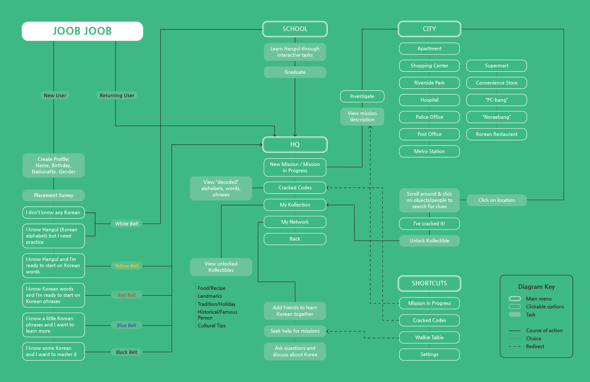
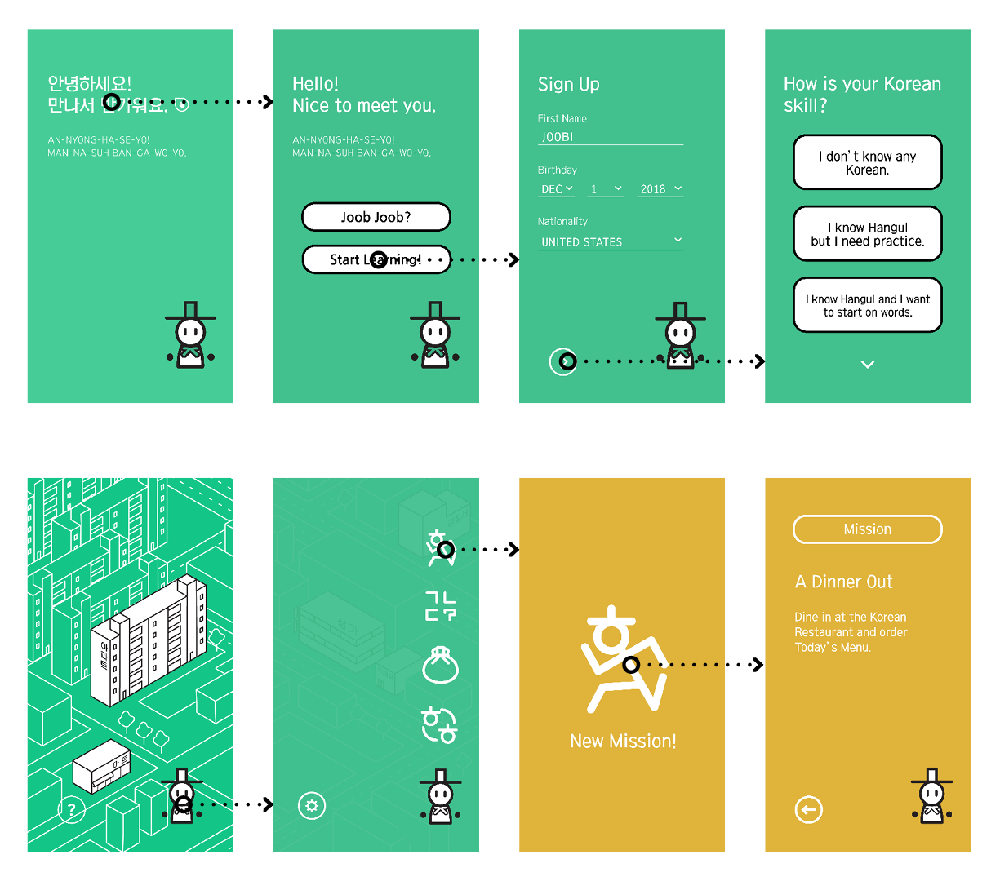
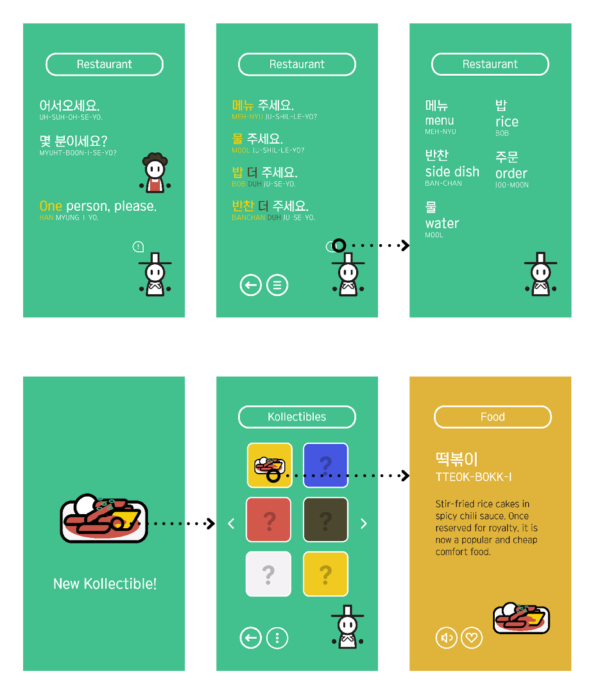
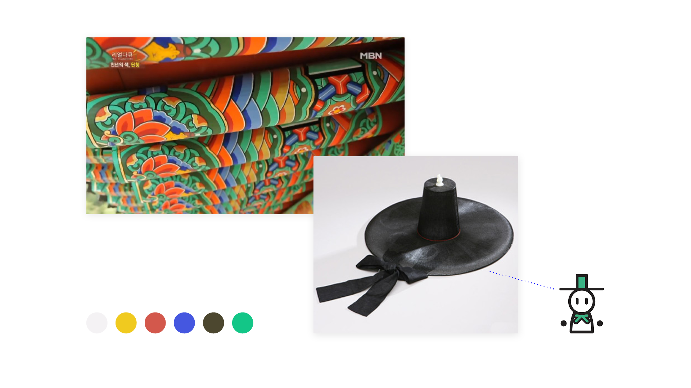
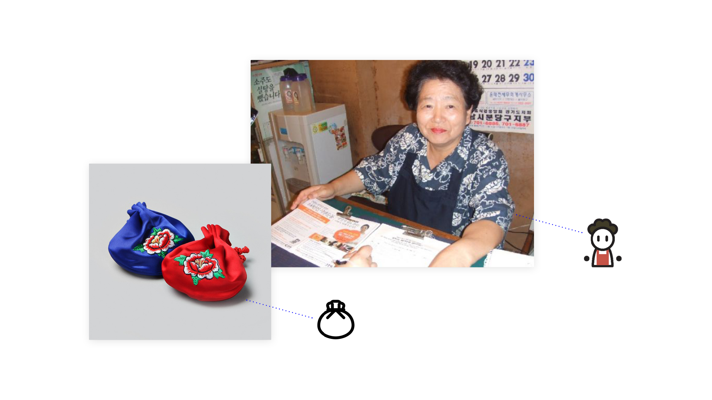
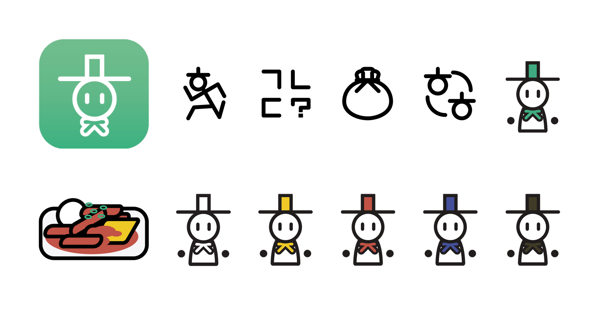
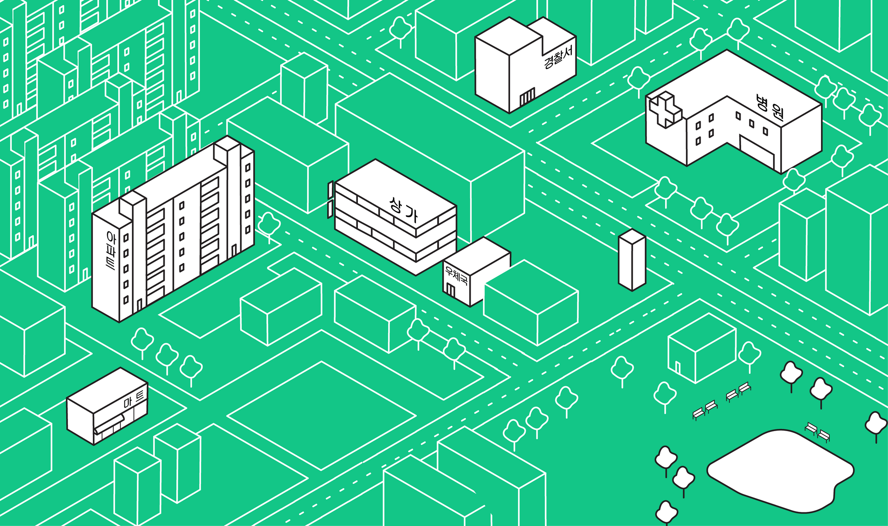
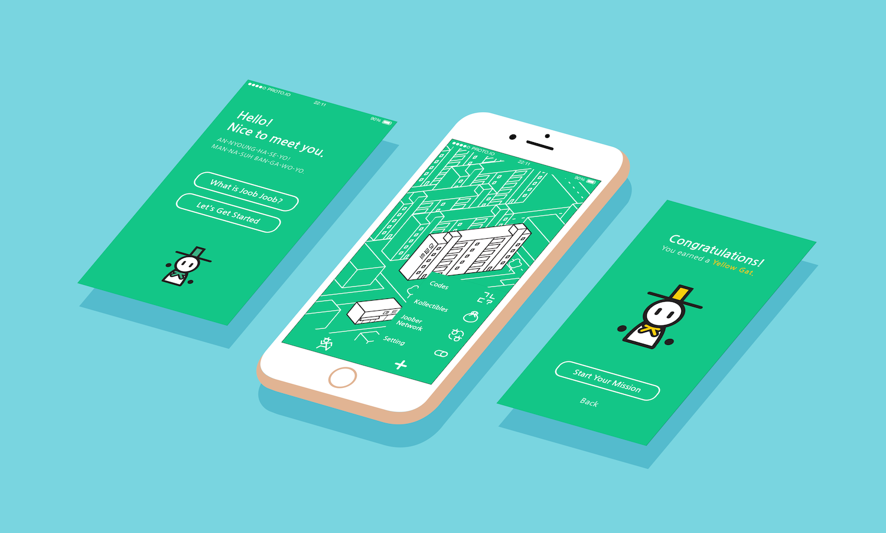
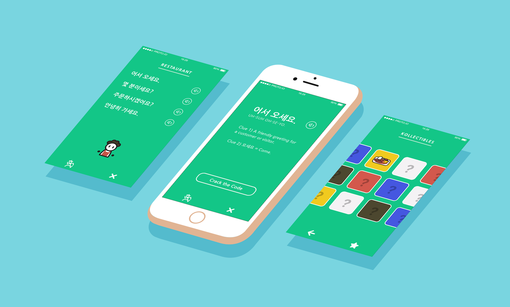

Task diagrams and wireframes were used as preliminary tools to ensure smooth navigation throughout the app before prototyping.

The visual elements were inspired from various traditional Korean motifs and my personal knowledge of Korea. The color scheme is based on Obangsaek, the five symbolic colors, as well as my favorite shade of green from temples. The restaurant owner in the game boasts the characteristic ajumma perm I've seen on many older women.

The name of the app comes from the Korean slang word 줍줍, which is a sort of onomatopoeia for picking up items in games or memes online.



